第3章 辐射 来自宇宙的信息
学习目标
本章的学习将使你能够：
- 概括波动的基本属性。
- 说明电磁辐射如何在星际空间中传播能量和信息。
- 描述电磁波谱的主要范围，并解释地球大气如何影响我们在不同波段进行天文观测的能力。
- 解释术语“黑体辐射”的意义并描述它的基本性质。
- 描述我们如何通过观测天体发出的辐射来确定它的温度。
- 展示辐射源与其观测者之间的相对运动是如何改变辐射的探测波长的，并解释该现象对天文学的重要性。
天体不仅仅是夜空中美妙的物体。如果我们能完全理解我们在宇宙万事万物中的位置，那么行星、恒星和星系都会变得意味深长。每个天体都是我们宇宙物质面貌的信息来源——它的运动状态、温度、化学成分，甚至是它的过去。
这些信息以光的形式传给我们。当我们眺望恒星时，我们所见的光线实际上在几十年前或者几百年前，甚至是几千年前就开始了前往地球的旅程。来自最遥远的星系的微弱光线要花费数十亿年才能到达地球。夜空中的恒星和星系向我们展示的是遥远和以前。在这一章里，我们将开始学习天文学家如何从天体发出的光线中提取信息。这些有关辐射的基本概念是现代天文学的中心。
3.1 来自天空的信息
图3.1显示了仙女星座内的一个星系。在漆黑晴朗的夜晚，远离城市或其他的光源，用肉眼可以在天空中看见通常被称为仙女星系的暗弱且模糊的斑块，角直径与满月差不多大。然而，从地球上可见的事实掩盖了这个星系到我们的巨大距离：它位于约250万光年之外。
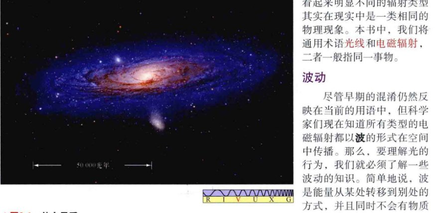薄饼状的仙女星系位于约250万光年之外，包含几千亿颗恒星。[R. 根德勒 (R. Gendler)]
在如此遥远距离上的天体的确是任何现实人类的意识所无法企及的。即使某个太空探测器可以奇迹般地以光速航行，它也需要250万年才能到达这个星系，并且需要另外的250万年才能带着发现返回。考虑到文明在地球上存在的时间不超过10,000年，并且文明在下个10,000年里的前景还无法预知，所以，即便是这种不可企及的技术壮举也不会为我们探索其他星系提供实用的方法。即使到达我们自己星系的最尽头，“仅仅”是数万光年远，这实际也超越了我们的实际造访能力，至少在可预见的未来里是这样。
考虑到在实际操作中不可能实现到如此遥远的宇宙角落的旅行，那么天文学家是如何了解这些远离地球的天体信息的呢？我们又能如何获得行星、恒星或是太过遥远的、人类或其他任何可控装置无法访问的星系的信息呢？答案是：我们可以利用我们在地球上已知的物理定律，来解释那些天体所发出的电磁辐射。
光和辐射
辐射是能量在空间中从一点传播到另一点的方式，它不需要两个位置之间有任何物理的连接。术语电磁只是意味着能量以快速波动的电场和磁场的方式传播（这将在后面的3.2节中更详细地讨论）。几乎所有我们对地球大气层之外的宇宙的了解都来源于对来自远处的电磁辐射的细致分析。我们对宇宙的理解完全取决于我们破译这些从太空而来的源源不断的数据的能力。
恒星（或星系、行星）有多亮，有多热？它们的质量是多少？它们的自转有多快？在宇宙空间中的运动如何？它们由什么构成？比例又是多少？问题列表很长，但有个事实是清楚的：电磁理论是提供答案至关重要的条件——没有它的话，我们将没有办法验证我们的宇宙模型，现代天文学也根本不会存在。（见1.2节）
可见光是人眼恰巧敏感的特殊类型的电磁辐射。当光线进入人眼时，进入的能量引发的细小化学反应向大脑发送电脉冲，产生视觉。但现代仪器（见第4章）也能探测许多不可见的电磁辐射，这些完全是人眼不可见的。射电、红外线和紫外线，以及X射线和伽马射线，都属于这一类。
注意，尽管名称不同，但光线、射线、辐射和光波都指的是同样的事物。名称不同仅仅是历史原因造成的，反映的事实都是科学家花了许多年才意识到的，这些看起来明显不同的辐射类型其实在现实中是一类相同的物理现象。本书中，我们将通用术语光线和电磁辐射、二者一般指同一事物。
波动
尽管早期的混淆仍然反映在当前的用语中，但科学家们现在知道所有类型的电磁辐射都以波的形式在空间中传播。那么，要理解光的行为，我们就必须了解一些波动的知识。简单地说，波是能量从某处转移到别处的方式，并且同时不会有物质从一个位置到另一个位置的物理运动。在波动时，能量是被某种形式的扰动携带的。这种扰动，不管其性质如何，均以独特的、重复的模式发生。池塘表面的波纹、空气中的声波，以及空间中的电磁波，尽管它们有许多明显的差异，但都有着这些基本的典型属性。
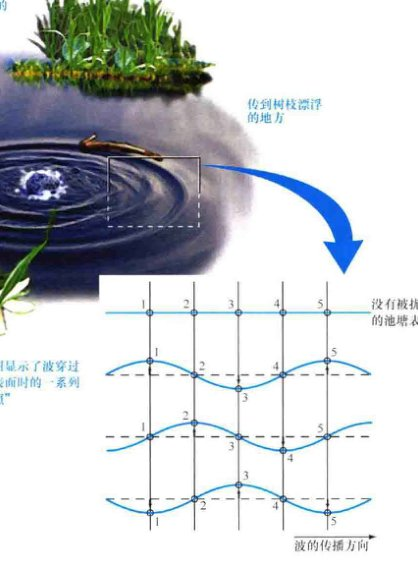波在穿过池塘时使水面上下起伏，但是并没有水从池塘的一边移动到另一边。
想象一根树枝漂浮在池塘里（见图3.2）。扔进池塘里并与树枝有一定距离的一颗鹅卵石会扰乱水面，使水面上下运动。这种扰动会从撞击点以波的形式向外迁移。当波抵达树枝时，一些来自鹅卵石的能量就会传给树枝，使树枝在水面上忽沉忽浮。通过这样的方式，能量和信息——鹅卵石被扔进水里的事实——从鹅卵石入水的地方便传播到了树枝所在的地方。我们可以仅仅通过观察树枝就能判断有鹅卵石（或者其他物体）被扔进了水里。加上一点额外的物理知识，我们甚至能够估计鹅卵石的能量。
波不是一个有形的物体。没有水从鹅卵石的撞击点移动到树枝处——从表面的任何位置看，水面只是在波传过时简单地上下起伏。那么，是什么穿过了池塘的表面呢？如图3.2所示，答案是：波是上下运动的模式。这种运动模式随着扰动在水面移动时，从一点传播到下一点。
图3.3展示了如何量化波的性质，并解释了一些标准术语。波的周期是波在空间中任意给定的位置处重复发生所需的秒数，波长是波在给定时间内重复发生时所需的米数。波长可以通过测量两个相邻的波峰之间的距离得到，或者是相邻的两个波谷，或者是相邻波动周期中相似的两点（比如图中标记为x的地方）。波在一个周期内移动的距离等于它的一个波长。
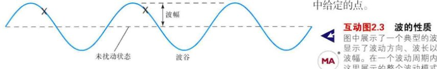图中展示了一个典型的波，显示了波动方向、波长以及波幅。在一个波动周期内，这里展示的整个波动模式向右移动了一个波长。
波离开非扰动状态的——静止的空气或者平坦的池塘表面——最大位置被称为波的波幅。
单位时间内通过任意给定点的波峰数量被称为波的频率。如果给定波长的波高速运动，那么每秒内通过的波峰会很多，频率也会很高。相反，如果相同的波移动得缓慢，那么它的频率会低。也就是说，波的频率正好是周期的倒数：
频率表示为时间单位的倒数（也就是，s-1，或者周期每秒），称为赫兹 (Hz)，以纪念19世纪的德国科学家海因里希·赫兹，他研究了无线电波的性质。因此，周期为5s的波的频率为 (1/5) 周期/s = 0.2 Hz，这意味着每5s会有一个波峰通过空间中给定的点。
波在一个周期内传播一个波长，由此可见，波速等于波长除以周期：
由于周期是频率的倒数，所以我们可以同样（更常用）将此关系表示为：
因此，如果之前的例子中波的波长为0.5m，那么它的速度将是0.5m/5s，或者为 0.5m × 0.2Hz = 0.1m/s。对于电磁辐射来说，波速为光速。请注意，波长和频率是互为倒数的——一个翻倍时，另一个将减半。
可见光的组成
白光是颜色的混合光，我们通常将其分为六种主要的颜色：红、橙、黄、绿、蓝和紫。如图3.4所示，让白光通过棱镜，我们可以将一束白光分成这些基本颜色的彩虹——称为光谱 (spectrum) （复数为spectra）。这个实验首先由艾萨克·牛顿在300多年前记录。原则上，让光谱通过第二个棱镜复合彩色光束后，可以复原原始的白光束。
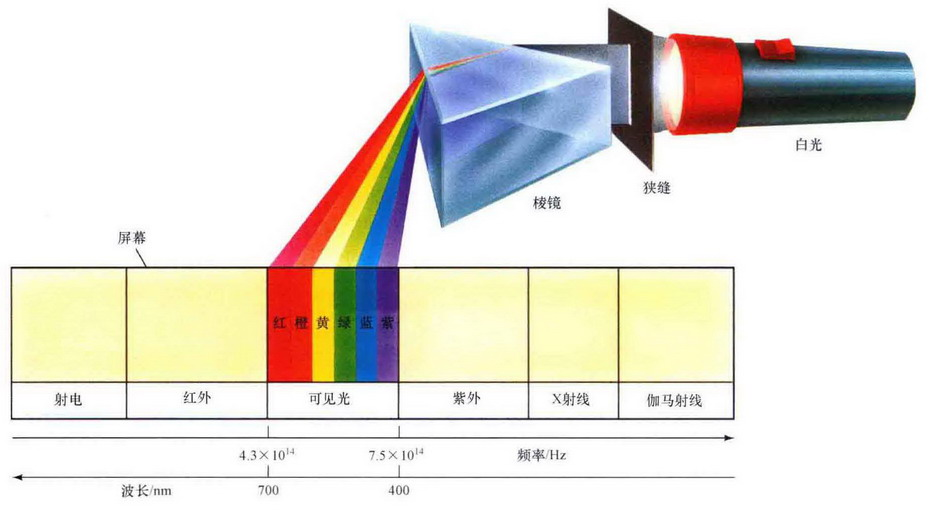穿过棱镜时，白光被分解为它的组成颜色，涵盖了从红色到紫色的电磁波谱的可见部分。辐射光束通过狭窄缝隙，投影在屏幕上的常见彩色“彩虹”，只是狭缝的一系列不同颜色的像。
是什么决定了光束的颜色呢？答案是它的频率（或者被说是它的波长）。我们能看到不同的颜色，是因为我们的眼睛对不同频率的电磁波有不同的反应。棱镜将光束分成单独的颜色是因为不同频率的光线通过棱镜时被弯曲或者说被折射得略有不同——红色最小、紫色最大。红光的频率大约为 4.3 × 1014Hz，对应波长约为 7.0 × 10-7m。紫光，处在可见光范围的另一端，频率约为红光的两倍——7.5 × 1014Hz——波长刚好超过红光的一半长（因为光速是不变的），为 4.0 × 10-7m。我们看见的其他颜色光的频率和波长介于两者之间，横跨如图3.4所示的整个可见光谱。在此范围之外的辐射，人眼是不可见的。
科学家常常采用被称为纳米 (nanometer, 符号为nm) 的单位来描述光的波长（见附录2）。1m = 109nm。早期也广泛使用被称为埃 (angstrom, 1Å = 10-10m = 0.1nm) 的单位。（该单位以19世纪的瑞典物理学家安德斯·埃格斯特朗命名——发音为 "ong strem"。）然而，在国际单位制中，纳米是标准用法。因此，可见光谱覆盖的波长范围为400nm~700nm (4000~7000Å)。人眼最敏感的辐射波长大约位于该范围的中间，约为550nm (5500Å)，位于光谱的黄绿色范围内。这不是巧合。该波长位于太阳发出的绝大部分电磁能量的波长范围内——我们的眼睛已经进化了，最大限度地利用了可用的光线。
3.2 波是什么？
辐射波与水波、声波或是其他在物质媒介中传播的波根本不同，辐射不需要这样的媒介。当光从遥远的星系或者任何其他的宇宙天体传来时，它通过的是虚无的真空。相反，声波不能这样传播，尽管你可能在每部科幻电影中都能听到声音！如果我们将一个房间内的所有空气都移走的话，那对话将是不可能的（即使有合适的设备让我们的实验对象都活着！），因为声波不能离开空气或其他承载它们的物理媒介而存在。然而，通过手电筒或是无线电交流却是完全可行的。
光能在真空中传播曾经是一个伟大的谜。光或是其他任何类型的辐射不需要任何媒介就能波动的观点似乎有悖常理，然而，它现在却是现代物理学的基石。
带电粒子之间的相互作用
要了解更多有关光的性质，可暂时考虑一颗带电粒子，比如一个电子或一个质子。和质量一样，电荷是物质的基本属性。电子和质子是基本粒子——它们是原子和所有物质的“积木”——携带着基本单位的电荷。电子携带一个负电荷，而质子则携带一个等量但相反的正电荷。
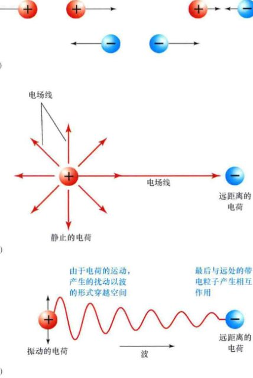正如一个大质量物体对其他所有有质量的物体都有引力那样，一个带电粒子也对宇宙中其他每个带电粒子有电场力作用。当你把衣服从衣物烘干机中取出时，电荷的累积（正电荷相比负电荷的净余量，或是相反）是导致衣服上产生“静电吸附”的原因；在特别干燥的日子里，这也是造成有时你在触摸金属门框时感受到电击的原因。
不像万有引力总是吸引力那样，电场力可能是吸引力，也可能是排斥力。如图3.5(a)所示，带同极性电荷的粒子（亦即都是负电荷或都是正电荷——例如，两个电子或两个质子）互相排斥。带不同极性电荷的粒子（亦即符号相反的电荷——如一个电子和一个质子）互相吸引。
电场力如何通过空间传播呢？任何带电粒子向各个方向的延伸称为电场，它决定了粒子对宇宙中所有其他带电粒子产生的电场力 [见图3.5(b)]。和引力场的强度一样，电场的强度随到电荷距离的增加按平方反比定律而减小。通过电场，所有的其他带电粒子，无论远近，都能“感受”到粒子的存在。
现在，假设我们的粒子开始振动，或许是因为它被加热、或是与其他某个粒子产生碰撞。它的位置改变导致它所产生的电场变化，这样的变化电场继而会使作用在其他带电粒子上的电场力发生变化 [见图3.5(c)]。如果我们测量其他带电粒子所受到的力的变化、我们就可以得知力的来源粒子的信息。因此，粒子运动状态的信息通过变化的电场在空间中传播。粒子电场中的扰动以波的形式在空间中传播。
(a) 携带同极性电荷的粒子相互排斥，而不同极性电荷的粒子相互吸引。
(b) 带电粒子周围是电场，决定了该粒子对其他带电粒子的影响力。我们用一系列的电场线表示电场。
(c) 如果一个带电粒子开始振动，那么它的电场就会产生变化。由此产生的扰动以波的形式穿越空间，最后与远处的带电粒子相互作用。
电磁波
物理定律告诉我们，每一个变化的电场都一定伴有磁场。磁场支配着被磁化的物体对另一个被磁化的物体的影响，就像电场支配了带电粒子之间的作用一样。事实上，指南针始终指向磁场北极的原因在于被磁化的针与地球磁场之间的相互作用（见图3.6）。磁场也对移动的电荷有作用力（比如说电流）——电表和电动机的工作就是基于这个基本事实。相反，运动的电荷会产生磁场（电磁铁是大家都熟悉的例子）。简而言之，电场和磁场相互密不可分：任何一个的变化必然会引起另一个的变化。
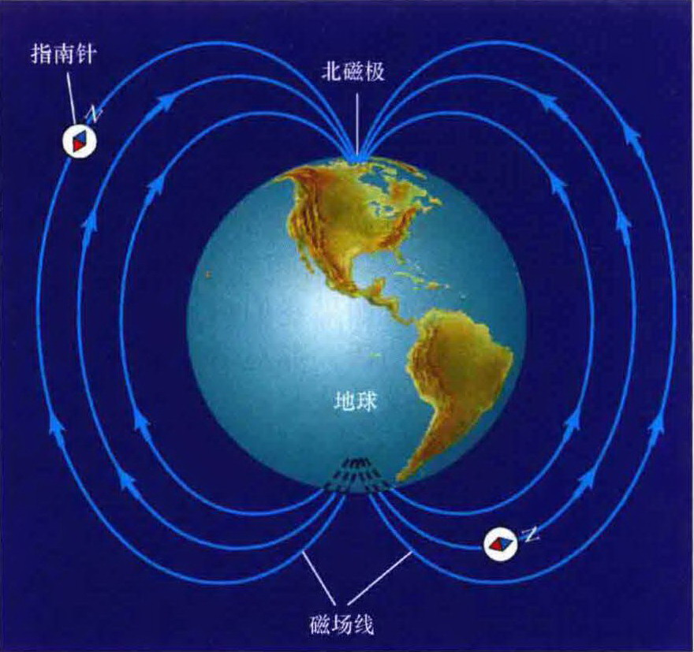因此，如图3.7所示，图3.5(c)中由运动电荷产生的扰动实际上由振动的电场和磁场组成、一起在空间中传播。而且，如图所示，电场和磁场的方向总是互相垂直并垂直于波的传播方向。它们不能作为独立实体存在；相反，它们是同一个物理现象——电磁场——的不同方面。它们一起构成电磁波，携带能量和信息从宇宙的一边传播到另一边。
地球磁场与磁型指南针相互作用，使指南针沿磁场排列——也就是说，指向地球北（磁）极。北磁极实际上位于北纬80°，西经107°处，距离地理北极约1140km。
现在考虑一个真正的宇宙天体——一颗恒星。当恒星中某些带电的物质运动时，它们的电场会发生变化，我们可以探测到这些变化。由此产生的电磁波以波的形式在空间中向外传播（辐射），不需要物质媒介作为载体。我们眼睛里的或是仪器设备里的小的带电粒子，最终会对电磁场的变化有所反应，产生和接收到的辐射频率一致的振动。这正是我们如何能探测辐射——也是我们如何能看到事物的原因。
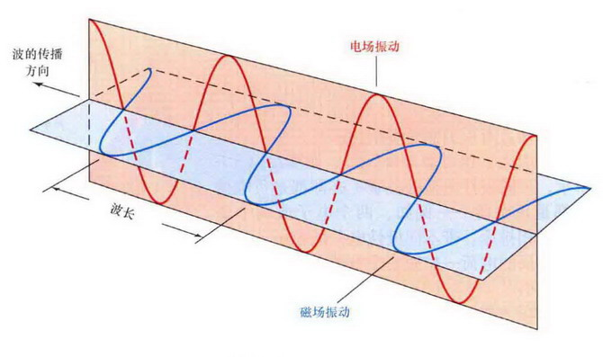电场和磁场互相垂直振动。它们联合起来形成电磁波并以光速在空间传播，方向垂直于构成电磁波的电场和磁场。
当一个电荷开始移动时，引起的电磁场变化对另一个电荷的影响有多快？这是个重要的问题，因为这相当于在问电磁波传播得有多快。它是以某种可测量的速度传播呢？还是瞬时的？理论和实验都告诉我们，所有的电磁波都以非常特定的速度传播——光速（总是用字母 c 表示）。它在真空中的精确值为 299,792.458 km/s（在如空气或水这样的物质内传播时要慢一些）。我们将该数值四舍五入为 c = 3.00 × 105 km/s，这是一个非常快的速度。在你打个响指的时间内（大约为1/10s），光就能绕着地球传播3/4圈！如果当前已知的物理定律是正确的话，那么光速是可能达到的最快速度（见详细说明11-1）。
光速是很快，但它仍然是有限的。也就是说，光不能瞬时地从一个地方传播到另一个地方。这一事实对于我们研究遥远的天体产生了一些有趣的影响。光需要时间——通常是很长的时间——在空间中传播。我们看到的来自于最近的大星系——如图3.1所示的仙女星系的光，在约250万年前从仙女星系里发出，那时，人类的第一个祖先才出现在地球上。我们对于该星系今天的存在一无所知。我们所知道的，甚至可能已经不再存在了！只有我们的后代，在250万年后的未来，才能知道它现在是否还存在。因此，当我们研究宇宙中的天体时，要牢记我们所见到的光是很久以前离开那些天体的。我们永远不能观测到宇宙的现在——只能观测到它的过去。
辐射的波动理论
本章描述了光和其他形式的辐射以电磁波的形式在空间传播，这被称为辐射的波动理论。这是一个成功的引人入胜的科学理论，充盈着解释和预测能力，深入洞察了光与物质之间复杂的相互作用——是现代物理学的基石。
然而，在两个世纪前，波动理论并没有太坚实的科学基础。大约在1800年前，科学家对光本性的认识有着分歧。一些人认为光是波动现象（尽管那时电磁学还不为人知），然而其他人则坚持认为光实际是沿直线传播的粒子流。鉴于当时可用的实验仪器，无论哪个阵营都不能找到确凿的证据来反驳对方的理论。探索2-1中讨论了一些对现代天文学来说尤其重要的波的性质，描述了在19世纪早期，利用可见光进行的实验所获得的发现，如何打破这两种科学观点的平衡，转而支持波动理论的。
但这并不是故事的结局。波动理论，正如所有优秀的科学理论一样，可以而且必须不断地通过实验和观测来验证。（见1.2节）大约在20世纪初，物理学家在非常小的（原子）尺度上，做出了一系列有关辐射与物质相互作用的发现，这些发现并不能简单地用刚刚描述的“经典的”波动理论来解释。必须要有所改变了。正如我们将在第3章里看到的，现代辐射理论实际上混合了曾经相互竞争的波动和粒子观点，结合各自的关键点形成了一个至少现在是统一的、无异议的整体。
✓ 描述揭示光是一种电磁波的科学推理过程。
3.3 电磁波谱
图3.8画出了电磁辐射的整个范围，说明了早前我们列出的各种不同类型的电磁辐射之间的关系。注意，区分不同类型辐射的特征是波长，或者频率。比可见光频率更低、波长更长的一端是射电和红外辐射。射电波段的频率包括雷达、微波辐射和我们熟悉的AM调幅、FM调频和TV电视波段。我们感受到的热辐射是红外辐射。在更高频率（更短波长）的一端是紫外线、X射线和伽马辐射。紫外辐射就位于可见光谱紫色的那端以外，会导致皮肤被晒黑和晒伤。波长更短的X射线最为人知的能力可能是它们能穿过人体组织并揭露人体内部的状况，而不需要通过外科手术。伽马射线是波长最短的辐射，它们通常与放射性有关，随时会损害它们所遇到的活体细胞。
辐射谱
所有这些光谱范围，包括可见光谱，共同构成了电磁波谱。记住，尽管它们的波长有很大不同，并且它们在地球日常生活中所起的作用也非常不同，但从根本上讲，它们都是相同的现象，并且都以共同的速度——光速——传播。
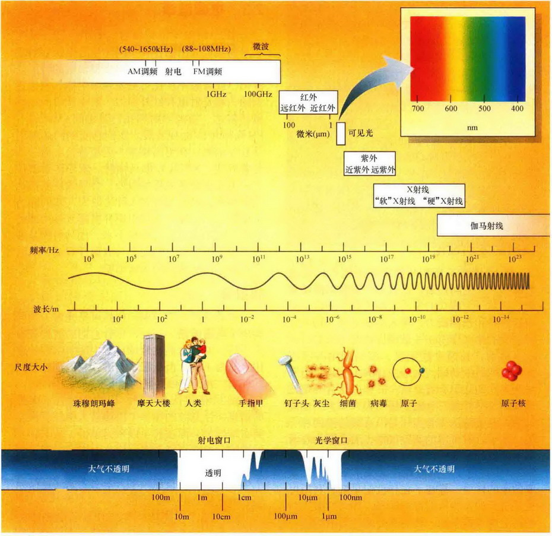整个电磁波谱，从长波、低频的射电波到短波、高频的伽马射线。辐射总能量的微不足道的一部分。通过研究电磁波谱的不可见部分，可以获得大量的非常特别的知识。
大气不透明度：图3.8的底部，地球大气的不透明度沿着波长和频率的刻度被标绘出来。阴影部分的大小正比于不透明度。在阴影最大的地方（比如光谱中X射线或“远”红外的范围），没有辐射可以进出。在完全没有阴影的地方（光学和部分射电波段），地球大气几乎完全是透明的。在光谱的某些部分（比如，微波波段和一些红外波段），地球大气是部分透明的。
图3.8值得认真考量，因为它包含了大量的信息。注意波的频率（以赫兹为单位）从左到右地增加，而波长（以米为单位）从右到左地增加。通常，科学家们对这类图表中展示波长和频率的“正确”方法有着不同的看法。为了生动地说明波长和频率，本书将始终遵循频率往右是增加的。
还需要注意的是，图3.8中波长和频率的尺度不是按10等量增加的。相反，水平轴上标记出的连续数值是按10的倍数变化的——每个数值都比相邻的数值大10倍。这种尺度类型被称为对数尺度，经常在科学上用于将某些大范围变化的量压缩成容易处理的大小。要是我们用线性尺度来表示图中的波长范围，那么将会有许多光年长！本书中，我们常常会发现，使用对数尺度能方便地将某些宽范围的量压缩到单幅、易理解的图中。
图3.8展示了波长从山脉大小（射电辐射）变化到原子核的大小（伽马射线辐射）的过程。右上角的小插图着重说明了电磁波谱的可见光部分到底有多小。宇宙中，绝大部分天体大量辐射的是不可见的辐射。事实上，它们中的许多在可见光范围内辐射的能量仅是它们定制的对不同波段电磁波敏感的探测器来实现这些观测。
探索 3-1 辐射的波动性
直到19世纪早期，科学界围绕关于光的本性仍有激烈的争论。一方面，艾萨克·牛顿提出的粒子或微粒理论坚持认为光是由做直线运动的微小颗粒构成的。不同颜色的光对应于不同的粒子。而另一方面，由17世纪的荷兰天文学家克里斯汀·惠更斯倡导的波动理论认为，光是一种波动现象，颜色由频率或波长决定。在19世纪的前几十年里，越来越多的实验证据表明，光展现出了波的两个关键属性——衍射和干涉——这有力地支持了波动理论。
衍射是波在通过拐角或是穿过狭缝时产生的偏转或“弯曲”。我们可能会认为，光在通过障碍物上边缘清晰的洞时会产生清晰的影子，特别是如果辐射由完全按直线运动的光线或粒子构成时。然而，如第一幅图所示，仔细观察会发现，所成的影子实际上有着“模糊”的边缘，如右边的照片所示——一个小圆孔产生了衍射图案。
我们通常不知道日常生活中也有这类效应，因为可见光产生的衍射一般非常小。对于任何波来说，衍射的大小正比于波长与狭缝宽度的比率。波长越长或狭缝越窄，波衍射的角度越大。因此，可见光由于波长极短，只有在通过非常狭窄的细缝时才会发生明显的衍射。声波的衍射要更为明显。没有人会怀疑自己听到别人说话的能力，即使那人在拐角的另一边，我们看不到他。
干涉是两个或两个以上的波相互增强或抵消的能力。第二幅图显示两组波穿过空间中的同一位置。两个波所处的位置恰好让波峰和波谷对应在一起。在上面的子图中，两个波的波长相等，但绿色波的波幅是与其波峰方向相反的橙色波的两倍。最终效果是，两个波的运动互相干扰，从而形成右边的波。这种现象被称为相消干涉。相反，当两个波互相增强时，如下面的子图所示，该效应被称为相长干涉。
与衍射一样，日常生活中可见光波的干涉不明显，但很容易在实验室中被测量出来。最后的照片展示了当两个相同的光源并排放置时，产生的特别干涉图案。亮带和暗带是由两个光源所发出的光束产生的相消和相长干涉所造成的。这个经典的实验首先由英国物理学家托马斯·杨在1805年左右实现，它促进了辐射的波动性理论的建立。
衍射和干涉都是光的波动理论所预言的现象。光的粒子理论并没有预言到这些；事实上，粒子理论预言这两种现象都不会发生。直到19世纪30年代，这两种现象才在实验中被清楚地观测到，这让大多数科学家相信，波动理论才是电磁辐射的正确描述。
大气不透明度
因为地球大气的不透明，天体产生的辐射只有一小部分能够到达地球表面。不透明度是辐射在介质中传播时被阻挡的程度——这里所说的介质是空气。物体越不透明，能穿过的辐射就越少（透明与不透明正好相反）。
大气不透明度的影响在于，地球大气层只对电磁波谱中少数界限清楚的光谱窗口是透明的。大部分射电波段和光谱的可见光范围的不透明度低，我们可以在地面上通过这些波段来研究宇宙。在部分红外波段，大气层是部分透明的，因此我们可以进行特定波段的红外观测。将观测地点移动到山顶，尽可能地位于大气层的上部，可以改善观测效果。然而，在其他光谱范围，大气层是不透明的：紫外、X射线和伽马射线的观测只能通过在大气层之外运行的卫星进行。
是什么造成了不透明度沿光谱的变化呢？大气层中的某些气体在某些波长对辐射的吸收非常显著。例如，水蒸气 (H2O) 和氧气 (O2) 吸收波长短于1厘米的射电波，而水蒸气 (H2O) 和二氧化碳 (CO2) 对红外辐射的吸收非常强，紫外、X射线和伽马射线辐射被地球大气中的臭氧 (O3) 层完全阻挡。可见光波段偶然出现的并且不可预知的大气不透明是由于大气层中的云层遮挡光线而造成的。
此外，太阳的紫外辐射和地球高层大气之间的相互作用产生了一个稀薄的、高度约为100km的带电传导层。这一层被称为电离层，像镜子反射可见光一样反射长波射电辐射（波长长于10m）。这样，地球之外的无线电波被挡在外面，而地球上的无线电波——如由调频广播发出的——被保持在地球上。（这正是为什么某些无线电频率能绕过地平线传播的原因——无线电波在电离层上会被反弹回来。）
✓ 在何种意义上，射电波、可见光和X射线是同一现象？
3.4 热辐射
所有的宏观物体——火焰、冰块、人、恒星——不管它们的大小、形状或化学组成如何，都在不停地发出辐射。它们产生辐射的原因主要是因为组成它们的微观带电粒子不断地变化其随机运动，每当带电粒子相互作用（“碰撞”）并改变运动状态时，就会有电磁辐射发出。物体的温度是直接估量物体中微观运动快慢的量（见详细说明2-1）。物体越热——也就是温度越高——组成其的粒子的运动就越快，它们的碰撞就越剧烈、辐射出的能量就越多。
黑体谱
强度是通常用于描述空间中任意一点辐射大小或强弱的术语。与频率和波长一样，强度也是辐射的一种基本性质。没有任何自然物体只在一个频率上发出所有的辐射。相反，由于粒子以许多不同的速度发生碰撞——一些碰撞轻微，另一些要剧烈得多——因此能量通常在一段频率范围内传播。通过研究辐射的强度是如何沿电磁波谱分布的，我们就可以了解许多关于物体的性质。
图3.9描述了一个物体产生的辐射的分布。其中，曲线的峰值位于某个单一、固定的频率上，并随着频率的增大或减小而减弱。注意，曲线的形状不像对称的钟形那样，沿峰值两边均匀地降低。相反，从峰值到低频端，强度下降的要比从峰值到高频端下降的慢得多。这样的整体形状是任何物体所发出的热辐射的特有特征，不管物体的大小、形状、成分或温度如何。
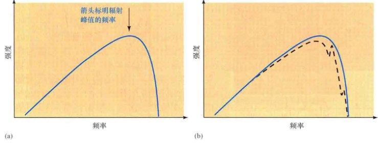黑体曲线或普朗克曲线代表了任意物体在所有可能频率上发出的辐射的强度分布。箭头指出辐射峰值的频率。注意(a)图中的纯粹的、“教科书”化的曲线与(b)图中太阳的真实发射曲线（虚线）做了对比。太阳大气和地球大气的吸收是导致不同的原因。
图3.9(a)画出的曲线是数学理想化后物体的辐射分布曲线，即黑体——一个吸收所有落在它上面的辐射的物体。处于稳定状态时，黑体一定会重新发出与其吸收的能量大小相同的辐射。图中所展示的黑体曲线描绘了这种重新辐射的分布。（该曲线也被称为普朗克曲线，以德国物理学家马克思·普朗克命名，他在1900年对这种热发射的数学分析在现代物理学的发展过程中起到了关键作用。）
没有真实的物体像完美黑体那样吸收和发出辐射。例如，图3.9(b)展示了太阳的实际发射曲线。然而，在许多情况下，黑体曲线是实际情况的很好近似，黑体的属性提供了洞察实际物体行为的重要信息。
详细说明 3-1 开尔文温标
构成任何一块物质的原子和分子都在不断地随机运动着。这种运动代表着被称为热能的能量形式，或者被更普遍地称为：热。我们称之为温度的量是物体内部运动的直接量度：物体的温度越高，构成它的粒子的随机运动平均越快。
我们熟悉的华氏温标，如同古老的英语语系中以英尺来度量长度、用磅来度量重量一样，其重要性多少令人怀疑。事实上，“华氏度”现在是美国的一个特色。世界上大多数国家使用摄氏温标来表示温度（也被称为百分温标）。在摄氏温度系统中，水的冰点是0摄氏度 (0°C)，沸点是100摄氏度 (100°C)。
当然，温度也可以低于水的冰点。原则上，温度可以低至-273.15°C（尽管我们知道宇宙中没有任何地方会有如此之冷）。这被称为绝对零度，即理论上所有原子和分子的热运动都会停止的温度。由于没有任何物体能有比此更低的温度值，所以科学家发现以绝对零度作为起点的温标要方便得多。这种温标被称为开尔文温度（开氏温标），以纪念19世纪的英国物理学家开尔文勋爵。由于从绝对零度开始，所以开氏温标与摄氏温标相差273.15°。本书中，我们四舍五入掉小数点后的数值，简单地采用以下公式：
开氏温标 = 摄氏度 + 273
因此：
- 所有的热运动在0开尔文 (0K) 时停止。
- 水的冰点是273开尔文 (273 K)。
- 水的沸点是373开尔文 (373 K)。
注意，单位是开尔文或K，而不是开尔文度或°K。
辐射定律
当物体的温度上升时，黑体曲线会朝更高频率（短波）的方向移动，强度也越大。即便如此，曲线的形状也保持不变。我们非常熟悉辐射的峰值频率随温度的改变：非常炙热的发光物体发出可见光，如烤面包机的加热丝或恒星；温度低一些的物体则发出不可见的辐射，如温暖的岩石，家庭用的散热器或人——摸起来是温暖的，但却不耀眼。后面提到的这些物体发出的辐射大部分位于电磁波谱的红外低频部分。
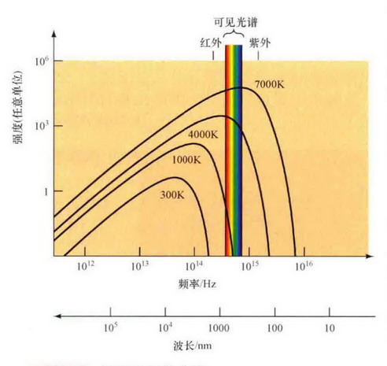想象一块放进炙热火炉的金属。开始时，金属变得温暖，尽管它的外观看起来没有什么变化。随着它被加热，金属开始变得暗红，然后是发橙、亮黄，最后变成白色。我们如何解释这种现象呢？如图3.10所示，当金属处于室温时（300K），它仅仅发出不可见的红外辐射。随着金属变热，它的黑体曲线的峰值也朝着高频方向移动。例如，在1000K时，虽然大多数辐射还是红外辐射，但现在也开始有一小部分的可见光（暗红）辐射。（注意，1000K的黑体曲线的高频部分刚刚能与图中的可见光范围重叠。）
当物体被加热时，它发出的辐射的峰值更高，峰值的频率也越高。这里展示的黑体曲线对应于温度300K（室温）、1000K（颜色开始变得暗红）、4000K（炙热红），以及7000K（炽白）。
随着温度继续上升，金属的黑体曲线的峰值穿过可见光谱，从红色（4000K的曲线）变成黄色。最终，金属变得发白，因为当黑体曲线的峰值位于光谱的蓝色或紫色部分时（7000K的曲线），曲线的低频端延伸穿过整个可见光谱（图中左边），这意味着也发出了大量的绿色、黄色、橙色和红色光线。所有这些颜色组合在一起形成了白色。
通过对黑体曲线的详细研究，我们得到了辐射物体的绝对温度（即以开尔文表示的温度）与其产生的主要辐射的波长之间的简单关系：
（记住这里的符号 ∝ 意思是“正比于”。）该关系被称为“维恩定律”，以德国科学家威廉·维恩命名，他在1897年建立了该关系。
简而言之，维恩定律告诉我们，越热的物体，它的辐射越蓝。例如，一个温度为6000K的物体发出的大部分能量位于光谱的可见光部分，峰值波长为480nm。600K的物体辐射的峰值波长是4800nm，恰好位于光谱的红外部分。温度为60,000K时，峰值会完全移出可见光谱范围，为48nm，位于紫外范围内，如图3.11所示。
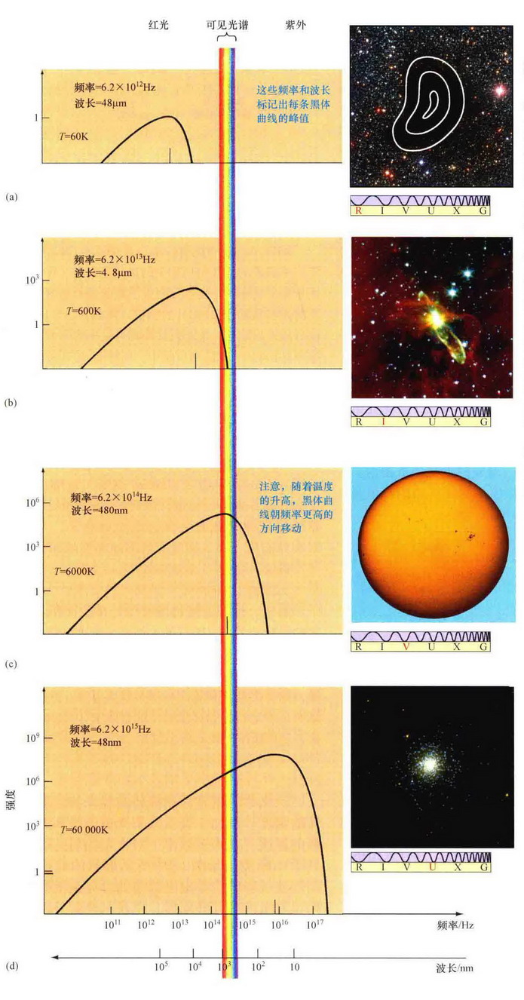四种宇宙天体的黑体曲线比较。辐射峰值的频率和波长都已标示了出来。 (a) 一团冰冷黑暗的名为巴纳德68的星系气体，温度为60K，它发出的大部分是射电辐射，这里用重叠的等高线画出来。 (b) 一颗名为赫比格-阿罗46的暗淡的年轻恒星。恒星的大气温度为600K，主要在红外波段发出辐射。 (c) 太阳表面，温度近似为6000K，在电磁波谱的可见光范围内最亮。 (d) 位于名为梅西耶2的星团内的一些非常炽热、明亮的恒星，由地球大气之外沿轨道运行的太空望远镜所拍摄。这些恒星的温度为60,000K，在紫外波段有强烈的辐射。
这也是一个重要的日常经验，随着物体温度的增加，它所辐射的总能量（所有频率的辐射累加起来）也迅速增加。例如，随着电热器温度的增加，它产生的热量急剧增加并开始发出可见光。细致实验得出的结论是，每单位时间内辐射的能量总量实际正比于物体温度的四次方：
这个关系被称为“斯特藩定律”，以19世纪奥地利物理学家约瑟夫·斯特藩为名。从斯特藩定律的形式中，我们可以发现物体发出的能量随着它温度的上升而急剧增加。温度的两倍变化将使辐射的总能量增加 24 = 16倍；温度增加3倍时，辐射将增加 34 = 81倍，以此类推。
详细说明 3-2 辐射定律的更多说明
辐射定律的数学公式
正如3.4节中所提到的，维恩定律将物体的温度 $T$ 与物体发出的主要辐射的波长联系起来。（希腊字母 $\lambda$，通常用于表示波长。）数学上，如果我们以开尔文测量温度 $T$，用毫米 (mm) 量度 $\lambda_{max}$，那我们可以得到正文中所提到的关系的比例系数，可得：
$\lambda_{max} = \frac{2.9 \text{ mm}}{T}$
我们还可以利用关系 $f = c / \lambda$（见3.1节），将维恩定律等价地转换为用频率 $f$ 来表述，其中 $c$ 是光速，但该定律通常还是用波长来表述，这样可能更容易记忆。
示例1 对于和太阳表面温度 $T$ ($\approx 6000K$) 相同的黑体，辐射强度最大时的波长为 $\lambda_{max} = (2.9/6000) \text{ mm} \approx 480 \text{ nm}$，对应于可见光谱的黄绿部分。温度为 $T=3000K$ 的较冷的恒星的峰值波长为 $\lambda_{max} = (2.9/3000) \text{ mm} \approx 970 \text{ nm}$，正好位于可见光谱红色一端外的近红外范围内。温度为12,000K的较热恒星的黑体曲线峰值是242nm，位于近紫外范围，其他可以以此类推。
我们也可以给斯特藩定律更为精确的数字化公式。以开尔文度量温度，物体表面每平方米每秒钟辐射的总能量（该量被称为能量通量 $F$）可由下式给出：
$F = \sigma T^4$
该方程通常被称为斯特藩-玻耳兹曼方程。常数 $\sigma$（希腊字母西格玛）被称为斯特藩-玻耳兹曼常数。在国际单位制中，常数的值为 $\sigma = 5.67 \times 10^{-8} \text{ W} / (\text{m}^2 \cdot \text{K}^4)$。
示例2 注意，随着温度的增加，能量通量的增加会非常快。一块火炉里的金属，当温度为 $T=3000K$ 时，每平方厘米表面积辐射能量的速率约为 $\sigma T^4 \times (1 \text{cm})^2 = 460 \text{W}$。温度升高两倍到6000K时，根据斯特藩定律，此时金属与太阳表面温度一样，能量发射的速率要增加16倍（“倍增”4次），达到 $7.3 \text{kW/cm}^2$。
天文中的应用
没有任何已知的地球上的自然物体有足够高的温度能发出非常高频的辐射。只有人造的热核爆炸才足够炽热，发出的光谱峰值位于X射线和伽马射线范围。然而，许多地球之外的物体却会发出大量的紫外、X射线，甚至是伽马射线辐射。
其他的宇宙天体有着比太阳更为寒冷或者更为炽热的表面，发出的辐射主要位于光谱的不可见范围。例如，一颗非常年轻的恒星有着相对寒冷的表面，温度为600K，主要发出的是红外辐射。从中形成恒星的星际气体云更冷；温度为60K，这样的气体云发出的主要是长波辐射，位于光谱的射电和红外波段。相比之下，最亮的恒星的表面温度高达60,000K，因此发出的主要是紫外辐射，如图3.11所示。
✓ 当你用调节开关调整一个白炽灯泡的亮度时，从“关”到“最亮”时，灯泡的模样会如何变化？为什么会有这样的变化？
3.5 多普勒效应
假设一艘火箭飞船带着足够多的燃料从地球发射，并能加速到接近光速。当飞船的速度增加时，将会发生一个非常特别的事情（如图3.12所示）。乘客们会注意到，他们飞行方向上的恒星系所发出的光看起来好像变蓝了。事实上，飞船前面所有的恒星看起来都会比正常情况偏蓝，并且飞船的速度越大，颜色的变化会越大。此外，飞船后的恒星看起来比通常要红，但飞船两侧的恒星模样却不会有变化。随着飞船慢下来，相对于地球静止时，所有的恒星将会回复原貌。
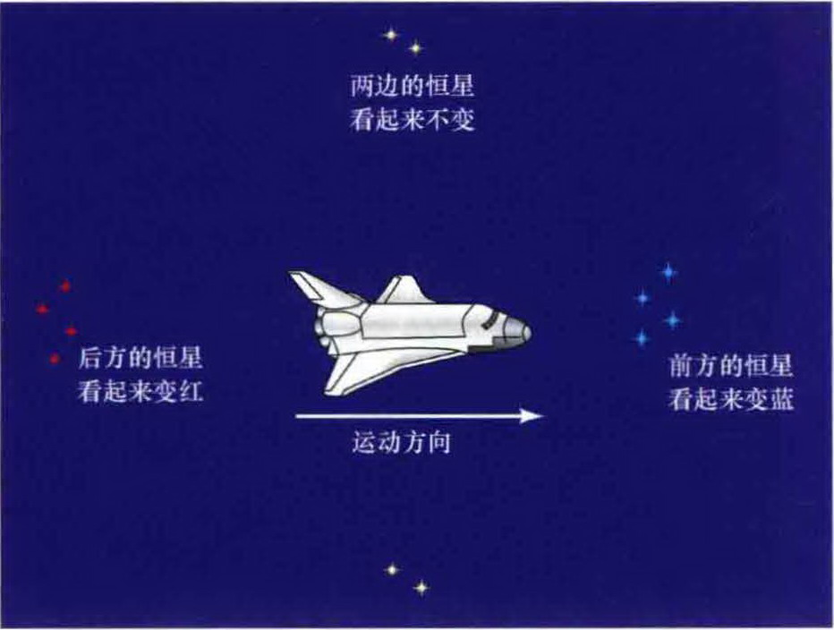高速运动的飞船内的观测者看到前方的恒星比平常要蓝，而飞船后面的恒星则比平常要红。恒星的性质实际没有改变——颜色的变化源自于观测者与恒星之间的相对运动。
旅行者会得到这样的结论：恒星改变了它们的颜色，不是因为它们的物理性质有任何实质性的变化，而是因为飞船自身的运动。这种由运动引起的波的观测频率的变化被称为多普勒效应，以纪念19世纪的奥地利物理学家克里斯汀·多普勒，他在1842年首先解释了这种现象。多普勒效应不只限于电磁辐射和飞速运动的飞船。在铁路路口等待快速列车通过时，我们大多数人都体会过，随着火车的到来和离开，我们听到的火车汽笛呜响会从尖锐（高频、短波）到低沉（低频、长波）。解释基本上是相同的。应用到宇宙电磁波源上后，多普勒效应已成为所有现代天文学中最为重要的测量手段。
如图3.13(a)所示，假设一个波从波源所处的地方传播到相对于波源静止的观测者处。通过记录两个连续波峰之间的距离，观测者可以确定发出的波的波长。现在假设不仅仅是波在移动，波源也在运动。如图3.13(b)所示，由于波源在两个连续波峰发出的时间内运动了，沿着波源运动方向的连续波峰看起来比通常时靠得更近，而波源后面的波峰之间的间隔更大。位于波源前进方向的观测者因此测量得到的波长比平常要短，而波源运动方向后面的观测者看到的则是更长的波长。
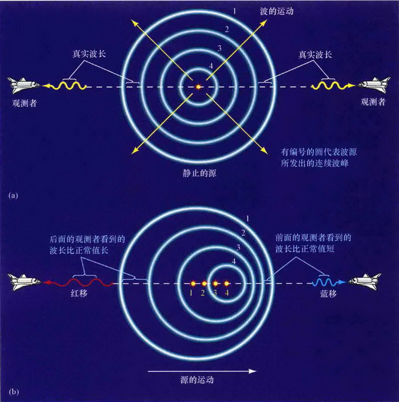(a) 波源发出的波向相对于波源静止的观测者运动。以观测者看来，波源并没有移动，因此波峰都是同心球（图中显示为圆）。 (b) 移动的波源发出的波趋向于向移动方向“堆积”，而在相反方向上“被拉伸”。这样导致处于波源前方的观测者测得比正常值要短的波长——即蓝移——而位于波源后方的观测者看到的则是红移。
源和观测者之间的相对速度越大，观测到的变化越大。如果所涉及的运动速度相比波速来说并不大——只有波速的百分之几——那我们就可以把观测者的所见用特殊的简单公式表示出来。根据源和观测者之间的退行速度，视波长和频率（观测者所测得的）与真实值（源所发出的波长和频率）之间的关系如下：
对于电磁辐射来说，波速是光速 $c$。注意图3.13中的波源是运动的，而在之前宇宙飞船的例子中（图3.12），观测者是在运动的。对电磁辐射来说，任何一个例子中得到的结果都是一样的——只有源和观测者之间的相对运动才是关键。同样要注意，上述方程中只包括沿着源和观测者连线方向上的运动——称为径向运动。与视线方向垂直的横向（垂直）运动对此没有显著影响。
位于移动的波源前方的观测者测得的波发生的是蓝移，因为蓝光的波长要比红光短。同样，位于波源后方的观测者将测量得到比正常值偏长的波长——这样的辐射发生的是红移。这样的术语甚至也用在不可见辐射上，虽然此时“红”和“蓝”没有什么意义。任何波长变短的频移被称为蓝移，而任何波长变长的频移被称为红移。详细说明2-3中叙述了天文学中是如何利用多普勒效应来测量速度的。
详细说明 2-3 利用多普勒效应测量速度
由千光速 $c$ 是如此巨大——300,000 km/s——因此地球上日常出现的速度所对应的多普勒效应是微不足道的。例如，考虑一个波源以地球在公转轨道上的速度 (30 km/s) 远离观测者，利用公式，我们得到一束蓝光发生的波长变化仅为 0.01%。这就是说，波长将从400nm变到400.04nm——确实是一个非常细微的变化，人眼是无法分辨出来的。然而，用现代仪器很容易就能检测出来。
示例 假设上面所提到的蓝光观测得到的波长为401nm，而不是它发出时的400nm。利用公式，重新表述为：
退行速度 = (波长的变化 / 真实波长) × 光速 $c$ = (1 nm / 400 nm) × $c$ = 0.0025 $c$ = 750 km/s
基本推导过程简单却非常强大。邻近恒星和遥远星系的运动——甚至是宇宙本身的膨胀——都用这种方法测量得到了。警用雷达利用多普勒效应测量速度，就像用雷达枪来测量投手投出的快球或是网球选手发球的速度那样。从驶来的汽车上反射回的辐射波（蓝色波峰）波长变短的量与汽车的速度成正比。
✓ 天文学家观测两颗恒星互相绕转。多普勒效应在确定恒星质量的过程中能起到什么作用？
章节回顾
小结
- 1. 电磁辐射在空间中以波的形式传播。波的特性有：周期，波长，波幅和频率。
- 2. 任何带电物体周围都有电场。粒子运动信息的电场和磁场变化以光速传播。
- 3. 整个电磁波谱包括射电波、红外辐射、可见光、紫外辐射、X射线和伽马射线。
- 4. 物体的温度是微观粒子运动速度的指标。热物体发出的辐射可用黑体曲线表示。
- 5. 维恩定律表明峰值波长与温度成反比。斯特藩定律表明辐射总能量与温度的四次方成正比。
- 6. 多普勒效应是波的观测频率因运动而改变。红移表示远离，蓝移表示靠近。
复习与讨论
- 波是什么？
- 波长、波的频率和波速之间的关系是什么？
- 衍射是什么？它与光的波动性有何关联？
- 光速c为什么如此特别？
- 指出组成白光的颜色。是什么导致我们看到它们的颜色不同？
- 正电荷对邻近的负电荷会产生什么作用？
- 描述光从恒星发出、在真空中传播并最终被地球上的某个观测者所观测到的过程。
- 为何光被看成是一种电磁波？
- 射电波、红外辐射、可见光、紫外辐射、X射线和伽马射线有何共同之处？它们又有什么不同？
- 大气层对电磁波谱的哪些部分内是透明的，并且可以从地面进行观测？
- 什么是黑体？它辐射的主要特征是什么？
概念自测：选择题
- 1. 与紫外辐射相比，红外辐射有更大的：(a) 波长；(b) 波幅；(c) 频率；(d) 能量。
- 2. 与红光相比，可见光中的蓝光传播得要：(c) 一样快。
- 3. 电子与原子发生碰撞时会：(b) 产生电磁波。
- 4. 根据图3.8，绿光的波长大小约为：(b) 一个细菌。
- (此处省略后续选择题...)